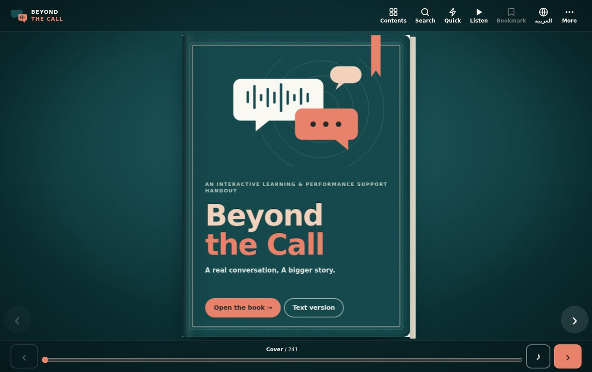
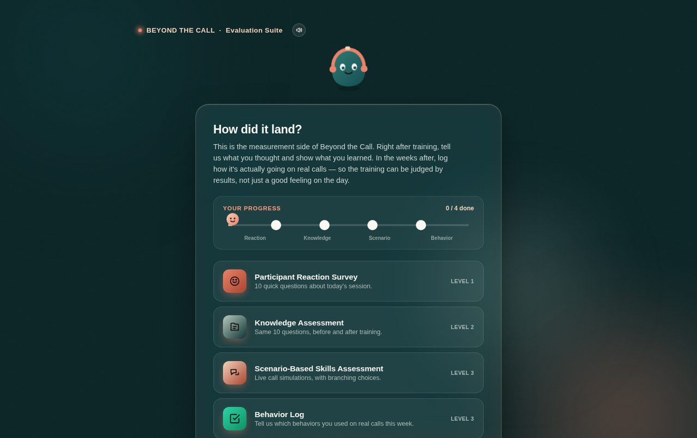

Beyond the Call
A complete training system, measurement built in
A one-day customer-service programme rebuilt end to end — from a training-needs case, through facilitator-ready activities and a bilingual handout, to a working four-level evaluation system that keeps measuring after the workshop ends.
Overview
Beyond the Call is a complete, one-day customer-service training programme — rebuilt from the ground up. It runs from a training-needs case, through facilitator-ready activities and a bilingual performance-support handout, to a working four-level evaluation system that keeps measuring after the workshop ends.
It isn't a slide deck. It's a full training kit a client could pick up and run — proposal, lesson plan, activities, handout, and measurement, all in one place.
Learning Need
Poor customer service costs companies billions a year, and most customers who have one bad experience simply don't come back. The harder problem — the one most training ignores — is that a one-day workshop rarely changes behaviour on its own.
So I designed for that exact gap: a programme built on a training-needs analysis, with the measurement plan built in from day one instead of bolted on afterward.
Audience & Objectives
Customer-service and call-centre agents — the people actually on the phone — in a single-day, facilitator-led format built for one intact team rather than a mixed open-enrolment group.
The twelve learning objectives climb the full Bloom's ladder in one day, a range most single-day programmes don't attempt:
- Remember the SCORE call model, the NPS formula, and core communication barriers.
- Understand the purpose behind each step, and tell open from closed questions.
- Apply the SCORE method in role-play; swap unsuitable phrases for better ones.
- Analyze a customer's underlying need and emotion, and spot where a conversation breaks.
- Evaluate the right action for an issue — handle, escalate, or follow up.
- Create an original response that combines empathy, clarity, and a next step.

What's in the Kit
Everything a facilitator needs to run the day and prove it worked:
Interactive digital handout
A bilingual (EN/AR) flipbook-style performance-support tool participants can search and reference long after the session.
Training outline & proposal
The business case, agenda, methodology, and evaluation plan — written the way a decision-maker reads, not a syllabus.
Full lesson plan
The day sequenced module by module, with timing and purpose for each.
Facilitator activity guide
An icebreaker and four structured activities, each with its own objective, timing, materials, and delivery steps.
The four activities move from reading a customer's real need, to choosing and rewriting responses, to finding the exact moment a call goes off track, to deciding who owns the next step — handle, escalate, or follow up.
Design Decisions
The instructional choices that make the kit credible:
Measurement built in, not bolted on
The evaluation plan was designed on day one, around a model L&D leaders already trust, so the programme can be judged by results.
Every skill measured twice
Once in a simulated environment, once on a real call — so practice and evidence line up instead of drifting apart.
Activities tied to observable skills
Each activity maps to a specific, observable behaviour, which is what makes soft-skills training provable instead of vague.
Built for one intact team
Designed for a real team with shared context, not a generic open enrolment — so the practice transfers to their actual floor.

Evaluation Strategy
This is the part most training kits stop short of. I built a working Evaluation Suite — all four Kirkpatrick levels, actually built:
A participant survey on clarity, relevance, and facilitation.
The same ten-question check before and after, with the key held back so the comparison stays honest.
A branching scenario simulation plus a self-report behaviour log, routed to a manager for validation.
A KPI dashboard tracking NPS, CSAT, churn, and complaint volume against a training baseline.
The Materials
Every part of the kit, ready to view or download — the proposal, lesson plan, activity guide, each activity, and the handout. The interactive handout and evaluation suite open right here inside the portfolio.


Outcome & Tools
The result is a complete, runnable training kit a client could deliver and measure — proposal to evaluation, in one coherent system.
What it reinforced. Soft-skills training has a credibility problem: easy to run, hard to prove. The fix wasn't a flashier workshop — it was designing the measurement first, so every activity ties to an observable skill and the whole thing stands up to a results conversation.
Reflection
Building the evaluation before the content changed how the whole programme came together. When you know from day one how a skill will be measured — in a simulation and on a real call — every activity has to earn its place. That constraint is what turns a pleasant training day into something a business can actually trust.